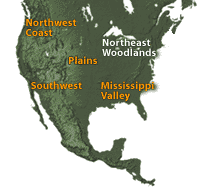
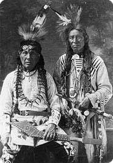
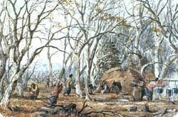

|

|
|

Two Anishinabe men, Cass Lake Minnesota, 1920.
Courtesy Minnesota Historical Society.
|
European Contact
The Woodlands people along the eastern seaboard were among
the first Native Americans to feel the impact of European immigration.
In the beginning, traders' demand for furs created an economic opportunity
for the American Indians. At the same time, increasing numbers of white
settlers eventually forced the Woodlands people west or north into Canada
in order to survive.
The Ojibwe People
Among the Woodlands people to be affected were the Ojibwe, who moved into
the Great Lakes region from the east in the 18th century. Today, the Ojibwe,
or Chippewa, are among the largest of American Indian nations. They live
in parts of Canada, Michigan, Wisconsin, North Dakota, and Minnesota.
There are seven Ojibwe reservations in Minnesota. In their own language,
the Ojibwe refer to themselves as Anishinabe, which means "original
people."
The Cycle of Life
In the past, the seasons of the year guided the lives and occupations
of all Ojibwe people. In winter, small communities based on family groups
lived in the forests, where they constructed wigwams of bent saplings
and birchbark. Men hunted game. Women tanned hides and made and decorated
objects for everyday use. With the first snowfall, the people gathered
by the fire in the evenings to tell stories, teaching their children history
and tradition.

Seth Eastman, Indian Sugar Camp, ca. 1850, watercolor.
Courtesy W. Duncan and Nivin MacMillan and the Afton Historical Society
Press. Enlarge
|
In spring, the people gathered in the maple groves to collect
sap to make sugar. During the summer, villages were set up on lakeshores.
Here, the men fished, and women planted crops like corn, squash, and pumpkins,
and gathered wild berries. By late August, it was time to harvest the
wild rice that grew in the shallow lake waters. When harvest was complete,
the Ojibwe trapped and fished to stock up for winter. The cycle began
again as they moved back to the forests for the winter months.
Identity
In the words of the people of the Red Lake Reservation in Minnesota, "To
be an Ojibwe is to sense the movement of nature, to learn from the winds,
the waters, and the richness of the earth. Our land was always our teacher
and always will be. That is why we cherish it and seek to save it for
our children and grandchildren and all generations to come."
Tribal Web Site
Iroquois web site: http://www.sixnations.org/
|